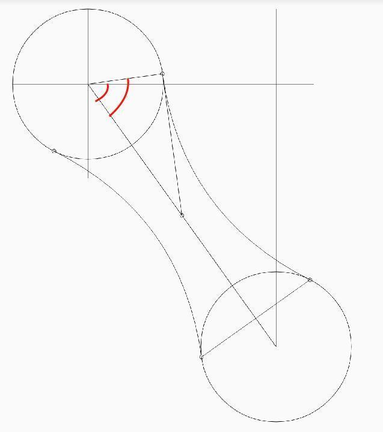

最近在做项目的时候，需要用到一个动画，非常简单的动画，简单到就是直接对一个View做平移… 然而虽然动画简单，但是却很不自然，尝试了UIView Animation提供的各类参数，都无法达到想要的动画效果。这时候，我的脑子里突然想起一个词… “贝塞尔曲线”…. 这个词经常看到，但却从没有去了解过，这次就趁着有求于它的雅兴，好好做个入门了解好了。
什么是贝塞尔曲线？ 显而易见的是，贝塞尔曲线，应该就是是一个叫贝塞尔的人发明的曲线吧，然而历史剧本却不是这么写的。贝塞尔曲线所依据的最原始的数学公式，是早在1912年就广为人知的伯恩斯坦多项式。OK，now，What is boensitan duoxiangshi？！简单来说，伯恩斯坦多项式可以用来证明，在[ a, b ] 区间上所有的连续函数都可以用多项式来逼近，并且收敛性很强，也就是一致收敛。再简单点，就是一个连续函数，你可以将它写成若干个伯恩斯坦多项式相加的形式，并且，随着 n→∞，这个多项式将一致收敛到原函数，这个就是伯恩斯坦斯的逼近性质。
贝塞尔曲线是怎么画出来的？ 首先，我们在平面内选3个不同线的点并且依次用线段连接。如下所示..
这是二阶贝塞尔曲线。
下面是三阶四阶和五阶。
最后是… 一阶….
所以贝塞尔曲线的厉害之处就在这里，从1-n阶的连续函数，他都可以计算得到一条光滑曲线。
贝塞尔曲线有什么用？为什么经常会听到这个名称？ 由于贝塞尔曲线控制简便，而且它具有很强的描述能力，因此它在工业设计上已经被广泛使用了。不仅如此，在计算机图形学领域（特别是矢量图形学），贝塞尔曲线也有着举足轻重的地位。而作为程序猿，我们经常会用贝塞尔曲线来绘图（由贝塞尔曲线画出来的图很光滑~），来做动画（很自然的动画）等等。也就是由于它可以发挥的作用领域太广了，因此我们时不时都会听到这个名字。
如何使用贝塞尔曲线？ 首先，要明确的一点是，对于贝塞尔曲线来说，最重要的点是，数据点和控制点。
用法1：简单地画图形 这里的简单用法就不细讲，虽然类名叫UIBezierPath，但画圆形啥的跟贝塞尔也没啥关系，直接贴代码。
1 2 3 4 5 UIBezierPath *bPath = [UIBezierPath bezierPathWithArcCenter:CGPointMake (300 , 300 ) radius:50 startAngle: DEGREES_TO_RADIANS(135 ) endAngle:M_PI*2 clockwise:YES ]; [bPath setLineWidth:5 ]; [bPath stroke];
1 2 3 UIBezierPath *ovalPath = [UIBezierPath bezierPathWithOvalInRect:CGRectMake (200 , 150 , 100 , 200 )]; [ovalPath setLineWidth:5 ]; [ovalPath stroke];
1 2 3 4 5 UIBezierPath *myBezierPath = [UIBezierPath bezierPathWithRect:CGRectMake (20 , 20 , 100 , 50 )]; [[UIColor blackColor]setStroke]; [myBezierPath setLineWidth:5 ]; [myBezierPath stroke];
1 2 3 4 5 6 7 UIBezierPath *tBPath = [UIBezierPath bezierPathWithRoundedRect:CGRectMake (220 , 20 , 100 , 100 ) byRoundingCorners:UIRectCornerTopLeft | UIRectCornerBottomLeft cornerRadii:CGSizeMake (20 , 20 )]; [[UIColor greenColor]setStroke]; [tBPath setLineWidth:5 ]; [tBPath stroke];
1 2 3 4 5 6 7 8 9 10 11 12 13 14 15 16 17 18 19 20 21 22 23 UIBezierPath * aPath = [UIBezierPath bezierPath];aPath.lineWidth = 15.0 ; aPath.lineCapStyle = kCGLineCapButt; aPath.lineJoinStyle = kCGLineJoinBevel; [aPath moveToPoint:CGPointMake (100.0 , 200.0 )]; [aPath addLineToPoint:CGPointMake (200.0 , 240.0 )]; [aPath addLineToPoint:CGPointMake (160 , 340 )]; [aPath addLineToPoint:CGPointMake (40.0 , 340 )]; [aPath addLineToPoint:CGPointMake (10.0 , 240.0 )]; [aPath closePath]; [aPath stroke];
1 2 3 4 5 6 7 8 9 10 UIBezierPath * twoPath = [UIBezierPath bezierPath]; twoPath.lineWidth = 5.0 ; twoPath.lineCapStyle = kCGLineCapRound; twoPath.lineJoinStyle = kCGLineJoinRound; [twoPath moveToPoint:CGPointMake (20 , 100 )]; [twoPath addQuadCurveToPoint:CGPointMake (220 , 100 ) controlPoint:CGPointMake (170 , 0 )]; [twoPath stroke];
画三阶贝塞尔1 2 3 4 5 6 7 8 9 10 11 UIBezierPath* bPath = [UIBezierPath bezierPath]; bPath.lineWidth = 5.0; bPath.lineCapStyle = kCGLineCapRound; //线条拐角 bPath.lineJoinStyle = kCGLineCapRound; //终点处理 //起始点 [bPath moveToPoint:CGPointMake(20, 250)]; //添加两个控制点 [bPath addCurveToPoint:CGPointMake(350, 250) controlPoint1:CGPointMake(310, 200) controlPoint2:CGPointMake(210, 400)]; [bPath stroke];
用法2：用贝塞尔曲线圆滑绘图 这个用法可以说是处女座的福音。
1 2 3 4 5 6 path = [UIBezierPath bezierPath]; UIPanGestureRecognizer *pan = [[UIPanGestureRecognizer alloc] initWithTarget:self action:@selector (pan:)];pan.maximumNumberOfTouches = pan.minimumNumberOfTouches = 1 ; [self addGestureRecognizer:pan];
再将捕获到的pan事件location数据依次加入到path中，并且用直线连接两点。
1 2 3 4 5 6 7 8 9 - (void )pan:(UIPanGestureRecognizer *)pan { CGPoint currentPoint = [pan locationInView:self ]; if (pan.state == UIGestureRecognizerStateBegan ) { [path moveToPoint:currentPoint]; } else if (pan.state == UIGestureRecognizerStateChanged ) { [path addLineToPoint:currentPoint]; } [self setNeedsDisplay]; }
最后画出轨迹。
1 2 3 4 - (void )drawRect:(CGRect )rect { [[UIColor blackColor] setStroke]; [path stroke]; }
最后将这个view添加到控制器上，很开心的Command + R，让程序跑起来。
开始画~
WHAT THE FXXK!!
1 2 3 4 5 6 static CGPoint midpoint(CGPoint p0, CGPoint p1) { return (CGPoint ) { (p0.x + p1.x) / 2.0 , (p0.y + p1.y) / 2.0 }; }
最后将手势处理中的连接方式替换成使用贝塞尔曲线。
1 2 3 4 5 6 7 8 9 10 11 12 - (void )pan:(UIPanGestureRecognizer *)pan { CGPoint currentPoint = [pan locationInView:self ]; CGPoint midPoint = midpoint(previousPoint, currentPoint); if (pan.state == UIGestureRecognizerStateBegan ) { [path moveToPoint:currentPoint]; } else if (pan.state == UIGestureRecognizerStateChanged ) { [path addQuadCurveToPoint:midPoint controlPoint:previousPoint]; } previousPoint = currentPoint; [self setNeedsDisplay]; }
再Run一次…
看，光滑多了~所以很多时候，当我们遇到画出的图形太不自然的时候，就可以试着用贝塞尔曲线解决这些问题，用到越高阶的曲线，画出的图形越光滑。
用法3：用贝塞尔曲线做变形 网上看到的大多数比较酷炫的动画，都是通过修改曲线的控制点，对曲线进行变形而做的。
这个动画最难地方就是手势拖拽的时候，直线的变形，可以首先的想到的是使用贝塞尔。通过创建path，添加控制点画出曲线，然后通过更改控制点的位置来达到让曲线进行变形的目的。
如上图所示，这里添加了7个点，从左到右依次为l3、l2、l1、c、 r1、 r2、 r3。屏幕最左和最右两边的l3和r3没有在图中显示出来，然后我们就可以以l3和l2为控制点，从l3到l1建立一条二阶贝塞尔曲线，再以c和r1为控制点建一条从l3到r1的曲线，最后以r1和r2为控制点建一条从r1到r3的曲线。 主要代码如下：
1 2 3 4 5 6 7 8 9 10 11 12 13 14 15 16 17 18 19 - (CGPathRef )currentPath { CGFloat width = self .view.bounds.size.width; UIBezierPath *path = [UIBezierPath bezierPath]; [path moveToPoint:CGPointMake (0 , 0 )]; [path addLineToPoint:CGPointMake (0 , self .l3ControlPointView.center.y)]; [path addCurveToPoint:self .l1ControlPointView.center controlPoint1:self .l3ControlPointView.center controlPoint2:self .l2ControlPointView.center]; [path addCurveToPoint:self .r1ControlPointView.center controlPoint1:self .cControlPointView.center controlPoint2:self .r1ControlPointView.center]; [path addCurveToPoint:self .r3ControlPointView.center controlPoint1:self .r1ControlPointView.center controlPoint2:self .r2ControlPointView.center]; [path addLineToPoint:CGPointMake (width, 0 )]; [path closePath]; return path.CGPath; }
建立好路径之后，就可以通过手势操作来修改控制点的坐标达到我们的目的了。
1 2 3 4 5 6 7 8 9 10 11 12 13 14 15 16 17 18 19 20 21 22 23 24 25 26 27 28 29 30 31 32 33 34 35 36 37 - (void )panDidMove:(UIPanGestureRecognizer *)gesture { if (gesture.state == UIGestureRecognizerStateEnded || gesture.state == UIGestureRecognizerStateFailed || gesture.state == UIGestureRecognizerStateCancelled ) { } else { CGFloat additionalHeight = MAX([gesture translationInView:self .view].y, 0 ); CGFloat waveHeight = MIN(additionalHeight*0.6 , kMaxWaveHeight); CGFloat baseHeight = kMiniHeight + additionalHeight - waveHeight; CGFloat locationX = [gesture locationInView:gesture.view].x; [self layoutControlPoints:baseHeight waveHeight:waveHeight locationX:locationX]; [self updateShapeLayer]; } } - (void )layoutControlPoints:(CGFloat )baseHeight waveHeight:(CGFloat )waveHeight locationX:(CGFloat )locationX { CGFloat width = self .view.bounds.size.width; CGFloat minLeftX = MIN(locationX-width/2 *0.28 , 0 ); CGFloat maxRightX = MAX(width+(locationX-width)/2 *0.28 , width); CGFloat leftPartWidth = locationX - minLeftX; CGFloat rightPartWidth = maxRightX - locationX; self .l3ControlPointView.center = CGPointMake (minLeftX, baseHeight); self .l2ControlPointView.center = CGPointMake (minLeftX+leftPartWidth*0.44 , baseHeight); self .l1ControlPointView.center = CGPointMake (minLeftX+leftPartWidth*0.71 , baseHeight+waveHeight*0.64 ); self .cControlPointView.center = CGPointMake (locationX, baseHeight+waveHeight*1.36 ); self .r1ControlPointView.center = CGPointMake (maxRightX-rightPartWidth*0.71 , baseHeight+waveHeight*0.64 ); self .r2ControlPointView.center = CGPointMake (maxRightX-(rightPartWidth*0.44 ), baseHeight); self .r3ControlPointView.center = CGPointMake (maxRightX, baseHeight); } - (void )updateShapeLayer { self .shapeLayer.path = [self currentPath]; }
通过这个思路，我们可以做出很多有意思而且有生命力的动画，这里一般还会经常和 CADisplayLink 一起用，先留个坑。
用法4：用贝塞尔曲线做缓冲动画 做动画最主要的一点，就是要让动画达到很自然的效果。这就要涉及到一些现实中的物理知识，比如重力弹力和速度等等，所以有时候，我们需要对动画的速度进行控制，有时候需要先快再慢，有时候需要先慢再快然后再慢，有时候又需要快慢超慢非常慢…CAMediaTimingFunction 。CAMediaTimingFunction 的主要用法可以理解为我们在一个二维坐标系上建议一条或曲线或直线的函数，这个函数的斜率就是动画的速度，斜率的改变量也就是导数则为加速度。理论上来说，这个坐标系上的任何曲线都可以用来当做加速动画。然而CAMediaTimingFunction 只给我们提供了一个三次贝塞尔曲线的函数，它可以生成三次贝塞尔曲线所能生成的所有缓冲函数。一个 两个好用的网站： http://www.roblaplaca.com/examples/bezierBuilder http://easings.net
1 2 3 4 5 6 7 8 9 10 CABasicAnimation *animation = [CABasicAnimation animation];animation.keyPath = @"borderWidth" ; animation.repeatCount = 1 ; animation.duration = 0.4 ; animation.removedOnCompletion = NO ; animation.timingFunction = [CAMediaTimingFunction functionWithControlPoints:0 :1 :1 :1 ]; animation.fillMode = kCAFillModeForwards; animation.fromValue = 0. f; animation.toValue = 40. f; [self .previewMask addAnimation:animation forKey:@"changeBorderWith" ];
效果如下：
用法5：用贝塞尔曲线做拟合计算 贝塞尔曲线有个非常常用的动画效果，叫MetaBall算法。什么是MetaBall？就是我们平时看到的QQ的小红点消除啦~ 像下面这样。
这个是怎么实现的？
矩形拟合 首先我们需要了解一下简单的矩形拟合原理
如图所示的两个圆，我们通过给它添加一个矩形（绿色部分），矩形较短的两边分别顶住两个圆各自的一条直径上，然后通过改变矩形较长的两边的弧度（红色部分），达到拟合的效果。
这种做法当两个圆较小的时候，几乎是没有问题的。但是当圆稍微大点的时候，就会出现很明显的相交区域，拟合效果非常不好。
所以这种简单的矩形拟合在圆较大的时候是很不严格的。这个时候就需要更严谨的切线拟合。
切线拟合 我们知道，之前的矩形拟合之所以才圆大的时候会出现拟合不严谨的情况。为什么？
正如上图所示，两条曲线的画法都是由A1和B1为起点和终点，C点为控制点和A1、B2为起点和终点，C为控制点画出的二阶贝塞尔曲线。

图片引用: http://www.jianshu.com/p/55c721887568
于是，现在解决问题的关键就转变成了：如何计算这些拟合的关键点？
图片引用: http://pandara.xyz/2015/10/27/ios_slime
我们现在要做的，就是求出点ABCDMN这六个点的坐标，就可以实现完美拟合了。
1 2 3 4 5 6 7 8 9 10 11 12 13 14 15 16 17 18 19 20 21 22 23 24 25 26 27 28 29 30 - (void )reloadBezierPath { CGFloat r1 = self .trailDot.frame.size.width / 2.0 f; CGFloat r2 = self .headDot.frame.size.width / 2.0 f; CGFloat x1 = self .trailDot.center.x; CGFloat y1 = self .trailDot.center.y; CGFloat x2 = self .headDot.center.x; CGFloat y2 = self .headDot.center.y; CGFloat distance = sqrt((x2 - x1) * (x2 - x1) + (y2 - y1) * (y2 - y1)); CGFloat sinDegree = (x2 - x1) / distance; CGFloat cosDegree = (y2 - y1) / distance; CGPoint pointA = CGPointMake (x1 - r1 * cosDegree, y1 + r1 * sinDegree); CGPoint pointB = CGPointMake (x1 + r1 * cosDegree, y1 - r1 * sinDegree); CGPoint pointC = CGPointMake (x2 + r2 * cosDegree, y2 - r2 * sinDegree); CGPoint pointD = CGPointMake (x2 - r2 * cosDegree, y2 + r2 * sinDegree); CGPoint pointN = CGPointMake (pointB.x + (distance / 2 ) * sinDegree, pointB.y + (distance / 2 ) * cosDegree); CGPoint pointM = CGPointMake (pointA.x + (distance / 2 ) * sinDegree, pointA.y + (distance / 2 ) * cosDegree); UIBezierPath *path = [UIBezierPath bezierPath]; [path moveToPoint:pointA]; [path addLineToPoint:pointB]; [path addQuadCurveToPoint:pointC controlPoint:pointN]; [path addLineToPoint:pointD]; [path addQuadCurveToPoint:pointA controlPoint:pointM]; self .shapeLayer.path = path.CGPath; }
现在我们已经可以做到非常完美拟合的时候了，这时候再结合前面的通过修改控制点来实现图形曲线变换，我们就可以做到类似QQ小红点消除一样的效果了，具体做法不再赘述。
Ending 至此，我们已基本了解了贝塞尔曲线的历史出处公式性质及各种用法。在不断学习的过程中，我发现一些比较牛逼的实现方法，都涉及到了较多较复杂的数学公式，奈何大学高数没有好好学，导致需要回头去看很多东西，这也是这篇博客耗费了较多时间的原因之一。不过在掌握了这些基础和基本用法之后，就可以再去研究一下比较高级和酷炫的用法了，也留下了很多坑，会在以后慢慢填补的…
参考链接 贝塞尔曲线维基百科 UIBezierPath Class Reference 贝塞尔曲线扫盲 自定义缓冲函数 iOS-UI进阶13 - 贝塞尔曲线和帧动画结合 贝塞尔曲线开发的艺术